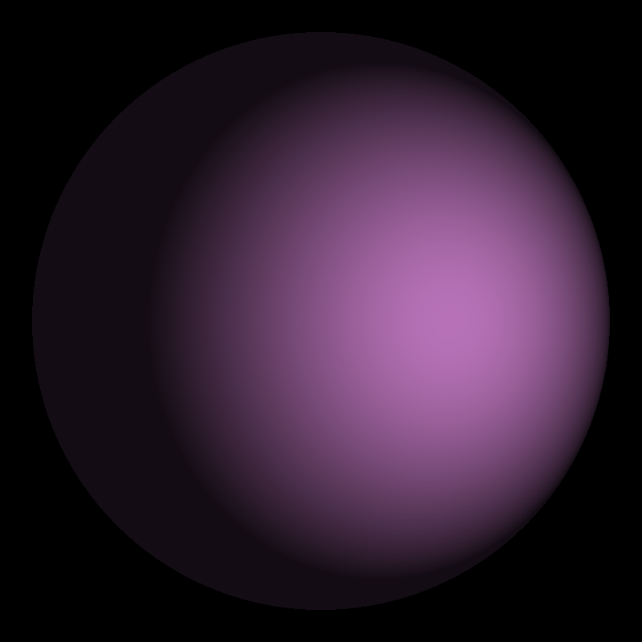
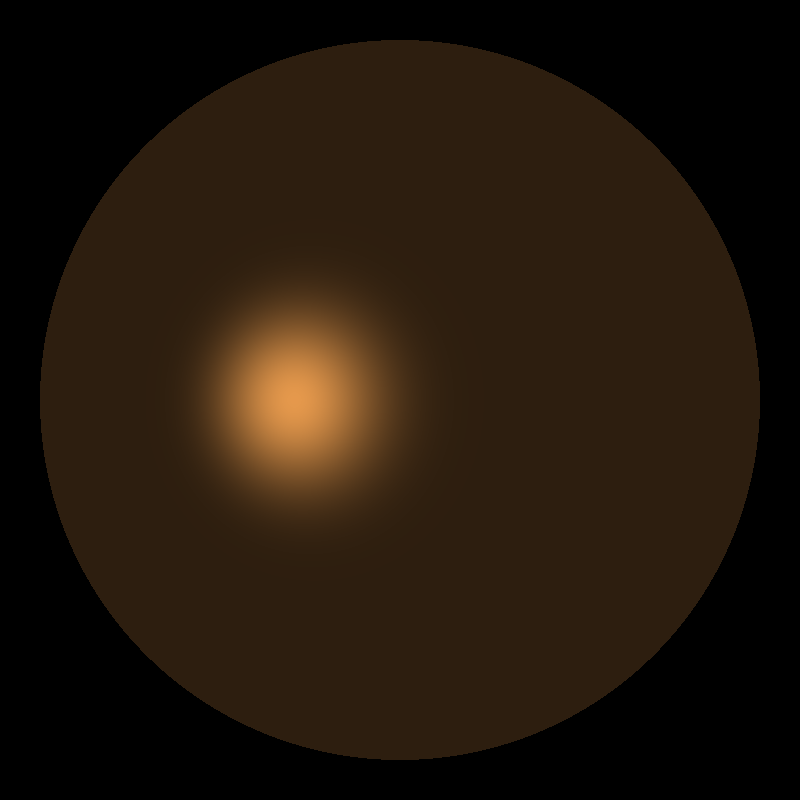
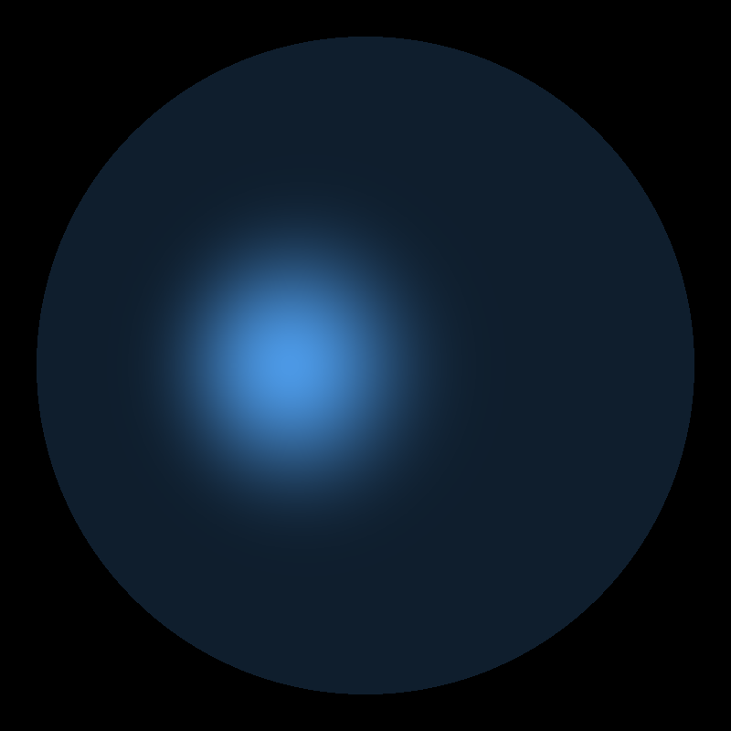
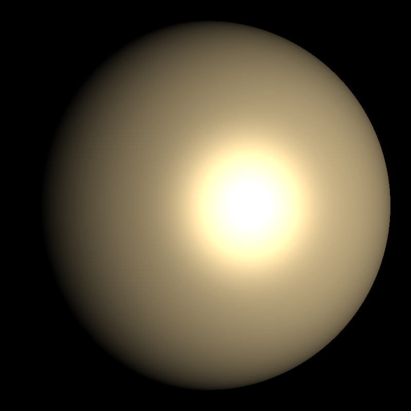
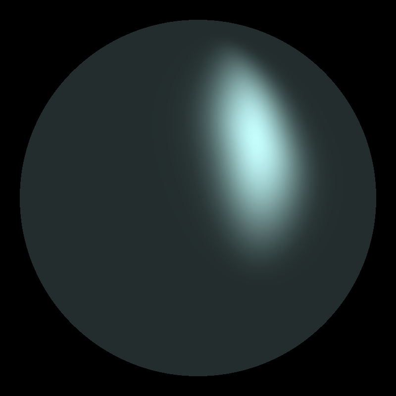
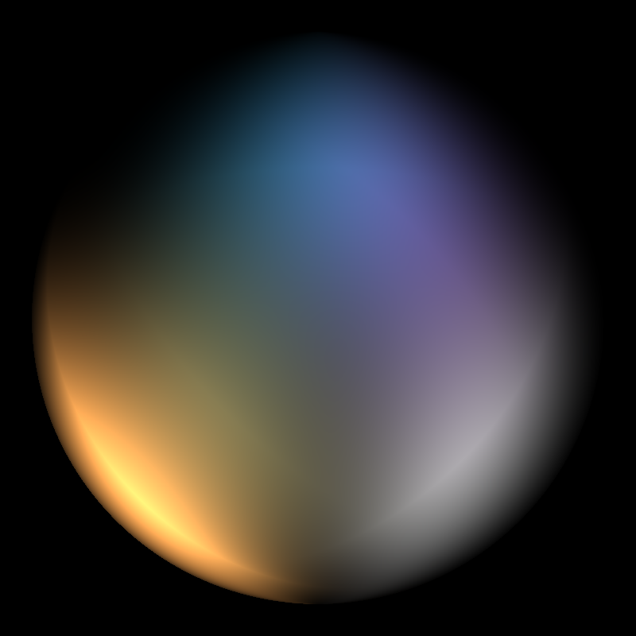
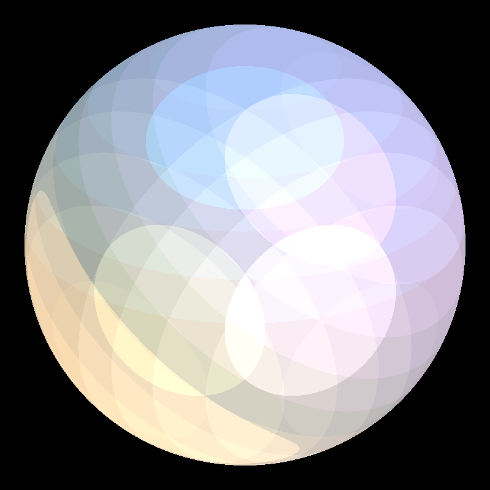

Assignment 1 (Home)
Phong Illumination Model - Point and Directional Lights
Program takes in a series of command line options:
- -ka r g b
This is the ambient color coefficients of the sphere material. The parameters r g b are num- bers between 0 and 1 inclusive.
- -kd r g b
This is the diffuse color coefficients of the sphere material. The parameters r g b are numbers between 0 and 1 inclusive.
- -ks r g b
This is the specular color coefficients of the sphere material. The parameters r g b are numbers between 0 and 1 inclusive.
- -spu pu
This is the power coefficient on the specular term in the u direction for an anisotropic material. It is a number between 0 and max_float.
- -spv pv
This is the power coefficient on the specular term in the v direction for an anisotropic material. It is a number between 0 and max_float.
- -sp p
This is the power coefficient on the specular term for an isotropic material. It is a number between 0 and max_float. (i.e. the same as setting pu and pv the the same value.)
- -pl x y z r g b
This adds a point light to the scene. The x y z values are the location of the light. The r g b values are it's color. Note that the x y z values are relative to the sphere. That is, the center of the sphere is at the origin and the radius of the sphere defines one unit of length. The Y direc- tion is UP, the X direction is to the right on the screen, and the Z direction is "in your face." The r g b value are between 0 and max_float, NOT between 0 and 1 (that is, the r g b values en- code the brightness of the light).
- -dl x y z r g b
This adds a directional light to the scene. The x y z values are the direction that the light points in. The r g b values are it's color. See -pl for coordinate system notes.
Outputs
Single Point Light (Diffuse only)
./as1 -kd .8 .8 .8 -pl 1 0 2 .8 .5 .8 -ka .1 .1 .1 -o diffuse-single.png
Single Point Light (Specular only)
./as1 -ks .8 .8 .8 -pl -1 0 2 .9 .6 .3 -sp 5 -ka .2 .2 .2
-o specular-point.png
Single Directional Light (Specular only)
./as1 -ks .8 .8 .8 -dl 1 0 -2 .3 .6 .9 -sp 5 -ka .2 .2 .2
-o specular-directional.png
Single Directional Light (Specular and Diffuse)
./as1 -ks .9 .9 .9 -dl -2 0 -4 .9 .8 .6 -sp 5 -kd .9 .9 .9
-o specular-diffuse.png
Anisotropic and Specular
./as1 -spu 10 -spv 2 -ks .9 .9 .9 -dl -1 -1 -1 .7 .9 .9
-ka .2 .2 .2 -o anisotropic-specular.png
Multiple Lights

./as1 -kd .7 .5 .8 -ks .5 .8 .7 -sp 2 -dl -1 -1 -1 1 1 1
-pl 1 0 1 1 0 0 -pl -5 3 1 1.0 0.5 1.0 -dl 1 3 0 0.2 1.0 0.8
-o multiple-lights.png
Ashikhmin Shirley Model
./as1 -spu 10 -spv 5 -kd 1.0 1.0 1.0 -ks 1.0 1.0 1.0
-dl -1 1 0 1.0 1.0 1.0 -dl 1 1 -1 .9 .9 .6
-dl 0 -2 -1 .2 .7 .9 -dl 1 1 1 .9 .6 .3
-dl -1 -1 -1 .7 .4 .9 -asm -o ashikhmin-shirley.png
Toon
./as1 -sp 2 -kd .3 .3 .3 -ks .3 .3 .3 -dl -1 1 -1 .7 .7 .7
-dl 1 1 -1 .6 .6 .3 -dl 0 -2 -1 0 .5 .7 -dl 1 1 1 .9 .6 .3
-dl -1 -1 -1 .7 .4 .9 -toon -o toon.png